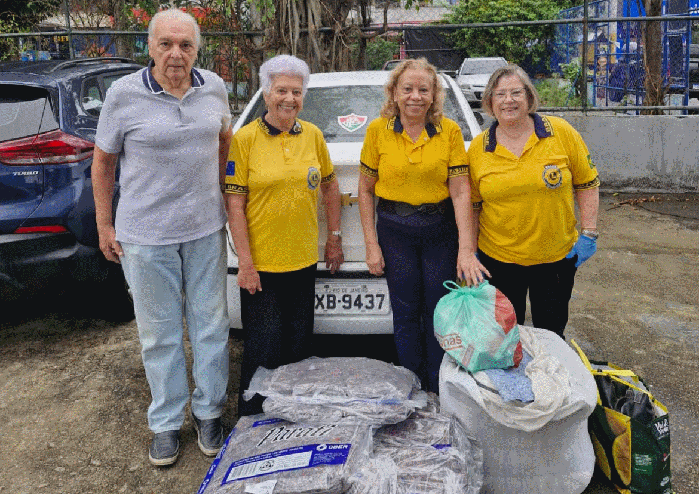

O clube
O Lions Clube Rio de Janeiro Recreio dos Bandeirantes, fundado em 5 de dezembro de 1989, consagra-se como uma tradicional agremiação de serviço comunitário na Zona Oeste da capital fluminense.
Integrante do histórico Distrito LC-1, a instituição mantém sua base de presença filantrópica em uma das regiões de mais expressiva expansão urbana da cidade.
Constituído juridicamente como uma associação privada voltada primordialmente à defesa de direitos sociais, cultura e arte.
Ao longo de sua profícua trajetória, a agremiação desempenhou um papel de inequívoca relevância na irradiação do ideal leonístico pelo Rio de Janeiro.
Esse compromisso com a expansão e o fortalecimento do movimento evidenciou-se de maneira cabal em 1994, ocasião em que o Recreio dos Bandeirantes assumiu a nobre responsabilidade de atuar como Clube Padrinho na fundação do Lions Clube Rio de Janeiro Cidade Maravilhosa.
Esta chancela histórica atesta a capacidade da unidade em mobilizar e apadrinhar novas lideranças dispostas a abraçar o serviço desinteressado em prol da sociedade carioca.
Ação Social do Terreirão

A Ação Social do Terreirão é realizada com a união de 10 Lions Clubes, testemunho vivo do espírito leonístico, marcado pela solidariedade, pelo serviço desinteressado e pela dedicação ao bem-estar da comunidade.
Unidos pelo lema "Nós Servimos", esses clubes oferecem um dia inteiro de cuidado, acolhimento e esperança, levando serviços essenciais a quem mais precisa.
Saúde da visão
Com atenção especial à saúde da visão, são disponibilizadas consultas, entrega de óculos e encaminhamento para cirurgias, sempre sob supervisão de profissionais qualificados. Os atendimentos de glaucoma e retina são conduzidos por médicos oftalmologistas da família Colombini.
Saúde da mulher e dermatologia
A prevenção ao câncer de mama também ocupa lugar de destaque, com consultas, mamografias, biópsias e cirurgias realizadas com o cuidado da Dra. Shirley e o apoio técnico da bióloga Terezinha Freitas, reforçando a importância do diagnóstico precoce e do acompanhamento contínuo.
Na área de dermatologia, a equipe da Santa Casa de Misericórdia, liderada pelo Dr. Azulay, oferece atendimento especializado, ampliando o cuidado integral à saúde.
Bem-estar e cidadania
Além dos serviços médicos, a comunidade recebe atenção em diversas áreas complementares, como medição de pressão, testes de glicemia, massoterapia, auriculoterapia e assistência jurídica, fortalecendo o bem-estar físico, emocional e social.
A autoestima também é valorizada por meio de cortes de cabelo e pintura de unhas, realizados pelos professores e pela equipe da Embeleze, que levam beleza e confiança a cada participante.
Para garantir cidadania e acesso a direitos, o CRAS participa da ação com a expedição de documentos, facilitando a vida de quem precisa regularizar sua documentação.
Todas essas atividades são custeadas pelos 10 clubes associados, reafirmando o compromisso coletivo com o serviço voluntário e com a transformação social.
Assim, os Lions Clubes seguem iluminando caminhos, promovendo dignidade e fortalecendo comunidades, sempre guiados pela missão de servir com bondade, respeito e amor ao próximo.